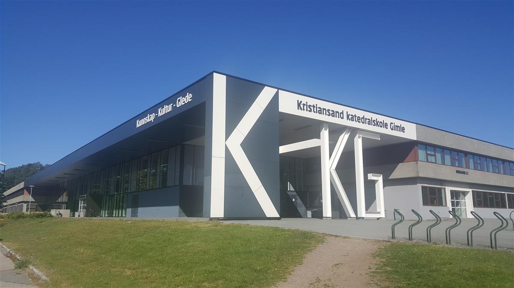

KKG Videregående Skole
Kristiansand Kateradale Skole er en vidergående skole i Kristiansand. Den ble grunnlagt i 1686 og blir regnet som den eldste skolen i Kristiansand.
Det var etablert som en Latin skole, men ble omgjort til en Kateradale skole ca 30 år senere.
Det er totalt 1650 elever som går på skolen, og skolen tilbyr blandt annet linjer som idrett og IB.
Selv synes jeg det var en veldig fin skole med bra kantine og lærere!
Tilbake til Hovedsiden
